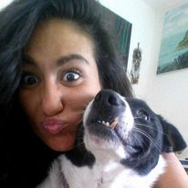
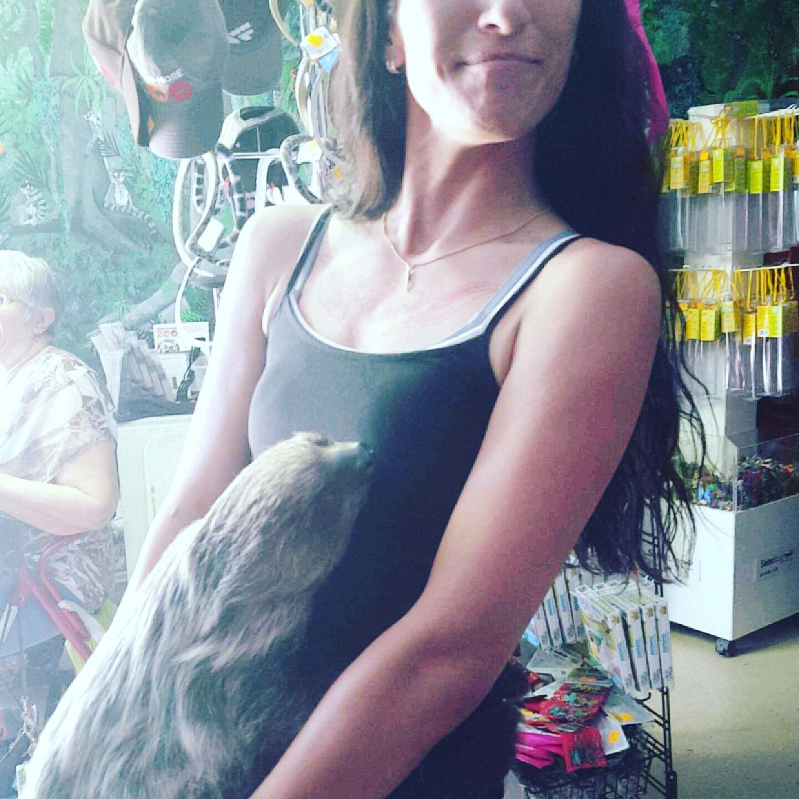

Danielle is a wife to a loving husband and mother to four beautiful daughters. She was born and raised in Las Cruces, New Mexico. Anthony, her husband, was born in Massachusetts but moved to Las Cruces later in life. Danielle is the youngest of eight children. 5 girls and 3 boys. Her father is deceased but her mother is living and very involved in her and her childrens lives. Danielle was a combat medic in the Army but was injured and medically discharged from the Army. After the military she worked odd jobs and began going to NMSU. She is currently a full time student and a stay at home mom. She is currently working on her Bachelor's Degree. Her life is chaotic but beautiful.

When free time allows, Danielle enjoys playing video games with her husband and children. She loves to bake breads and sweets for the Veterans at the VFW post in town. Danielle has made crochet blankets for her children and a few nephews and nieces. She has also made cardigans and various other items. She enjoys making gifts for her family. She has a garden of fruits and vegetables that she tends to regularly. She has two dogs one is a border collie heeler mix who is 14 that she has had since she was 4 months old, her name is Prudence Michelle. Her other dog is a 6 year old mutt who She believes is a German Pinscher mix named Sadie Jane

Danielle loves to watch horror movies. She loves to listen to a wide variety of music, she was raised on golden oldies but likes punk, rock, alt, country and classical to. Her favoirte color is Yellow and her favorite season is Summer because she loves to be outside chatting with friends and family. She loves Korean dishes and Italian food. Her favorite animal is the sloth and the first trip Danielle took with Anthony was to a animal santuary that she was able to hold a sloth.
Danielle has had an interesting life thus far and continues to strive for personal growth and happiness. Some of her goals and aspirations include:
Danielle has many long term goals that she hopes to achieve in her lifetime. Some of these include: